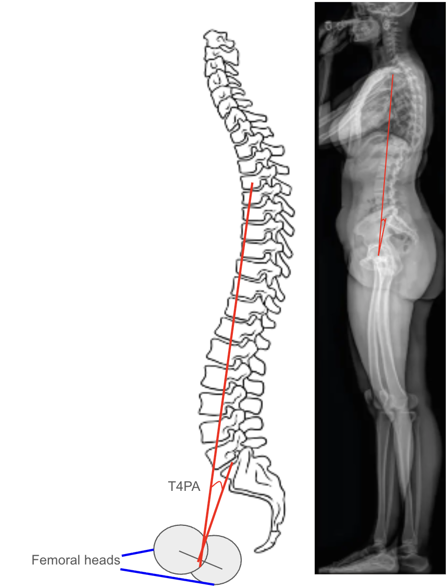

1) Description of Measurement
The T4 Pelvic Angle (T4PA) is a sagittal alignment parameter that evaluates global spinal balance, integrating both thoracic inclination and pelvic retroversion into a single angular measurement. It is defined as the angle formed between two lines:
Unlike the Sagittal Vertical Axis (SVA), which is posture-dependent, T4PA provides a positional-independent metric that accounts for both upper spinal inclination and compensatory pelvic rotation. T4PA reflects the thoracic contribution to sagittal alignment and is particularly valuable when assessing thoracic deformity correction, post-fusion compensation, and overall sagittal harmony.
2) Instructions to Measure
3) Normal vs. Pathologic Ranges
Key Point:
T4PA > 20° is associated with increased disability, reduced energy efficiency, and postoperative dissatisfaction in adult spinal deformity (ASD) populations.
4) Important References
Protopsaltis T, Schwab F, Bronsard N, et al; International Spine Study Group. TheT1 pelvic angle, a novel radiographic measure of global sagittal deformity, accounts for both spinal inclination and pelvic tilt and correlates with health-related quality of life. J Bone Joint Surg Am. 2014 Oct 1;96(19):1631-40. doi: 10.2106/JBJS.M.01459.
Lafage R, Schwab F, Challier V, et al; International Spine Study Group. Defining Spino-Pelvic Alignment Thresholds: Should Operative Goals in Adult Spinal Deformity Surgery Account for Age? Spine (Phila Pa 1976). 2016 Jan;41(1):62-8. doi: 10.1097/BRS.0000000000001171.
Yilgor C, Sogunmez N, Boissiere L, et al; European Spine Study Group (ESSG). Global Alignment and Proportion (GAP) Score: Development and Validation of a New Method of Analyzing Spinopelvic Alignment to Predict Mechanical Complications After Adult Spinal Deformity Surgery. J Bone Joint Surg Am. 2017 Oct 4;99(19):1661-1672. doi: 10.2106/JBJS.16.01594.
Vaynrub M, Hirsch BP, Tishelman J, et al. Validation of prone intraoperative measurements of global spinal alignment. J Neurosurg Spine. 2018 Aug;29(2):187-192. doi: 10.3171/2018.1.SPINE17808. Epub 2018 May 18.
5) Other info....
T4PA is a variation of the T1 Pelvic Angle, shifting the upper reference point caudally to reduce measurement variability due to shoulder position and thoracic inlet obstruction.
It serves as a practical surrogate when T1 is not clearly visible on lateral radiographs, while maintaining correlation with global sagittal alignment parameters (R² ≈ 0.9 with T1PA).
T4PA combines thoracic inclination (spinal alignment) with pelvic tilt (compensation), offering a more complete picture of sagittal posture than SVA alone.
Target alignment goals in adult deformity correction:
Larger T4PA values correlate with increased fatigue, forward stooping, and functional disability, and reduction of T4PA postoperatively reflects improved posture restoration.
Use EOS low-dose imaging or stitched digital long-cassette X-rays for maximal accuracy and minimal projection error.
Always interpret T4PA in conjunction with thoracic kyphosis, lumbar lordosis, and pelvic parameters to fully characterize spinopelvic balance.